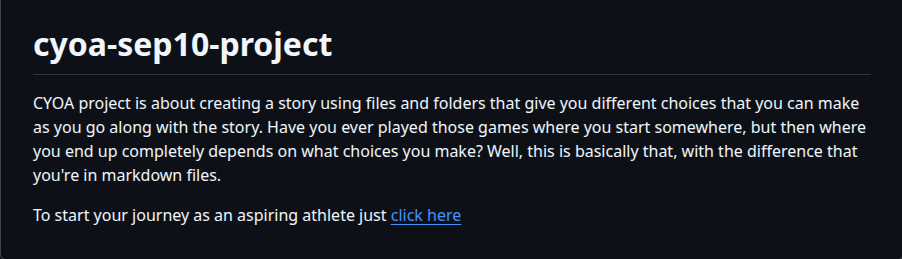

My teacher assigned a Choose Your Own Adventure (CYOA) project to help us practice GitHub/Markdown commands and collaborating with a new person that you had in common with, in class our teacher made us do a google form where the class selected our top choices for what we wanted our project to be about, and then we were paired in groups of two based on the similar choices you input. Moreover, this project also helps enhance our knowledge and muscle memory on where everything is on the IDE. Additionally, we had to create multiple files that are linked together to form an interactive storyline where the person can navigate the whole story. Furthermore, the purpose of this assignment was to help us be more comfortable navigating between files. Overall, this helped us gain more experience and new skills for the future.
For this project, my partner and I created a storyline about an aspiring athlete who is trying to make it professional and make the right decisions in order to achieve that goal. In different points in the story, the reader has two or three choices on what they want the upcoming athlete to do. As each choice leads to a different file.md with a different outcome. Some paths lead to improvement and success, while other option shows consequences or missing opportunities. Additionally, we had to carefully link each file to a different file so when the reader clicked on a choice, it would successfully redirect them to the next part of the story. If one problem would have occurred, the whole storyline would break.
One challenge that I faced was keeping track and making sure that every file was connected correctly. Since each choice created a new branch in the story, it was really easy to make a mistake and accidentally mislink a file which can cause the whole story to be ruined. Furthermore, I had to double check multiple times that I could add a file to this directory to make sure the reader could progress the story. Another challenge was remembering to use Git commands in the correct order. For example, there were times when I forgot to git add . files before committing or had to git commit -m "" before pushing. But over time, my partner had really helped me understand more about this and for me it's a growing experience, as I became more comfortable using the IDE more and working with a partner. From now on, if me and my partner had more time on this project we would put pictures to make the story appealing and create more choices for the story. I would also like to organize my files so it becomes more clearer to me where I can link each file to something, to avoid confusion. Overall, this project helped me communicate more with a new partner and my understanding of code in general.
Link about the project